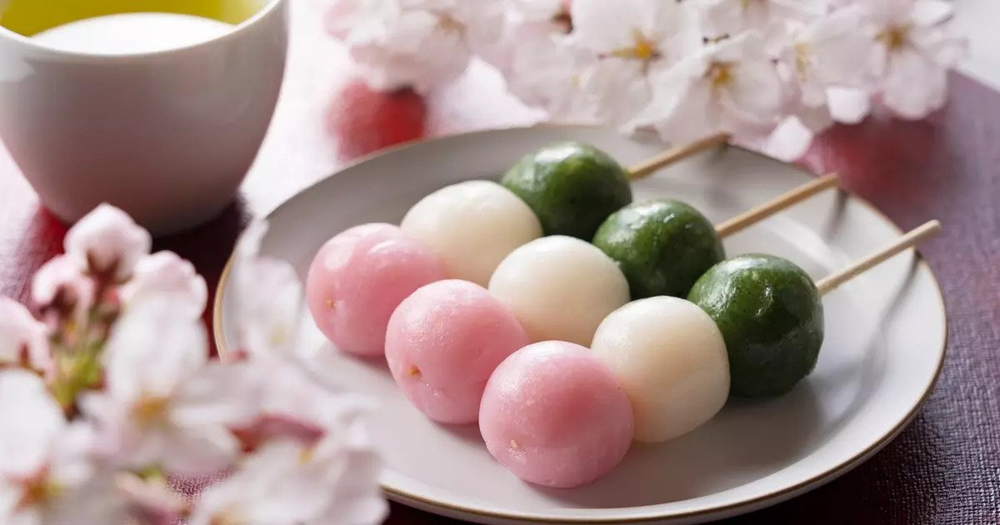
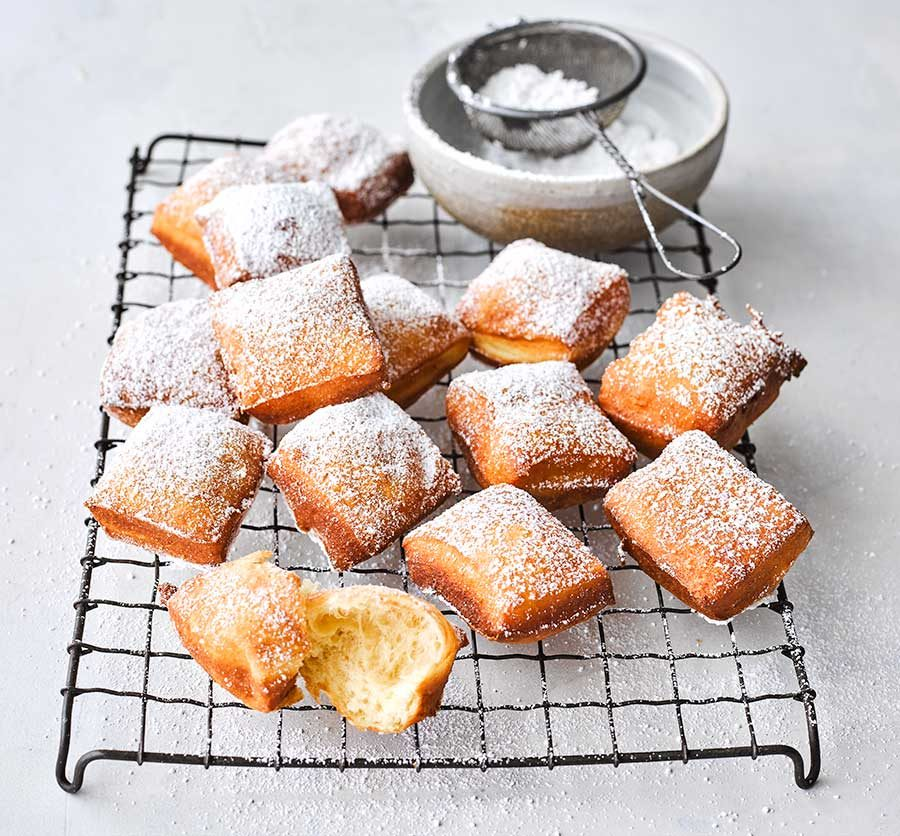
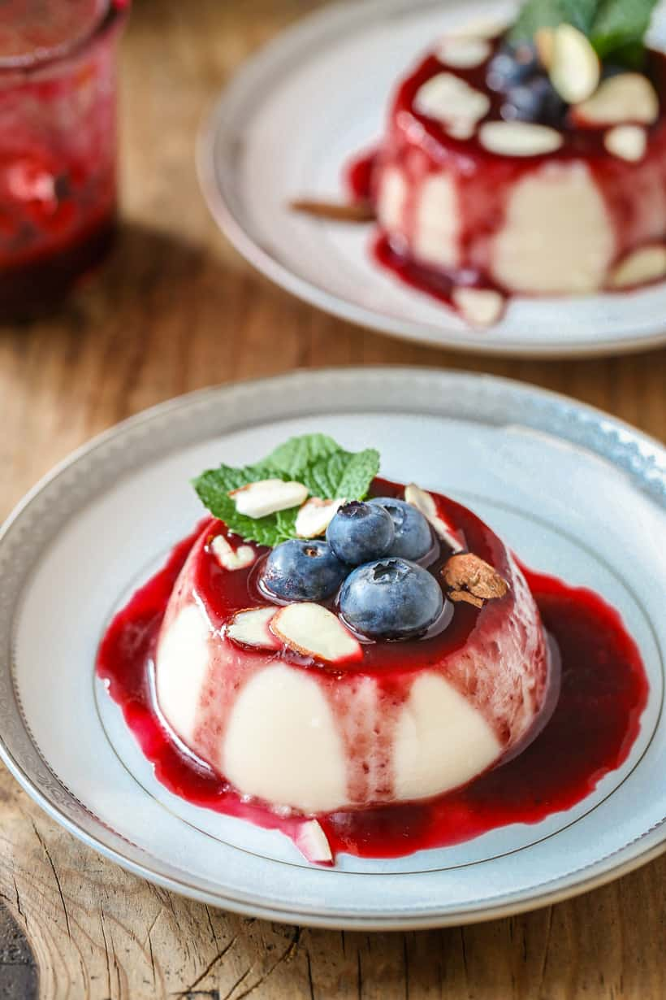

Dessert Recipe
A savory dessert is a happy life!
American Dessert

Dango
Dango is a Japanese dumpling made from rice flour mixed with uruchi rice flour and glutinous rice flour. It is different from the method of making mochi, which is made after steaming glutinous rice.
View Recipe

Beignet
Beignet a type of fritter, or deep-fried pastry, possibly made from pâte à choux and called pets-de-nonne, which means "nun's fart" in French, but may also be made from other types of dough, including yeast dough.
View Recipe

Panna cotta
Panna cotta (Italian for "cooked cream") is an Italian dessert of sweetened cream thickened with gelatin and molded. The cream may be aromatized with coffee, vanilla, or other flavorings.
View Recipe
Dango recipe
Dango is usually finished round shaped, three to five dango are often served on a skewer. Generally, dango comes under the category of wagashi, and is often served with green tea.
Ingredients
- Joshinko glutinous rice flour
- Shiratamako glutinous sweet rice flour
- Powdered sugar
- Hot water
- Matcha powder
- Pink food coloring
Instructions
- First, soak the 12 bamboo skewers in water.
- Place the rice flours into a bowl and then pour in the hot water. Begin mixing with a spoon, and then when it starts to take shape, use your hands to mold the dango dough together. Add a little more flour or water if needed. The dough should feel like clay or play-doh, but softer.
- Evenly divide the dango dough into three pieces. Place each one into a separate bowl.
- Add 1 drop of pink food coloring to one piece of dough and work it in until there is no more white.
- Now add 1 teaspoon of water to the matcha powder and mix to make a paste. Then add it to another piece of dough and work it in well. The last piece of dough should remain white.
- Shape the dough into balls. Begin shaping the dough into balls. Each ball should be 20 grams, weighed on a kitchen scale. The recipe makes about 36 balls.
- Bring a pot of water to a boil and begin cooking the white balls first. Once they rise to the top of the pot, continue cooking them for another 2 minutes.
- Once cooked, use a slotted spoon to transfer the steamed dango to a bowl of ice water.
- Continue this process with the pink and then the green dango to avoid staining the water.
- Place the balls on the bamboo skewers, making sure to place the green ones on first, then the white, and the pink ones last. Serve as they are or add a topping.
Beignet Recipe
Beignet is a type of fritter, or deep-fried pastry, possibly made from pâte à choux and called pets-de-nonne, which means "nun's fart" in French, but may also be made from other types of dough, including yeast dough.
Ingredients
- Vegetable oil, or canola oil, for deep-frying
- 1/2 cup unsalted butter
- 1 cup water
- 1/4 teaspoon fine salt
- 1 cup all-purpose flour
- 4 large eggs
- 3 tablespoons confectioners' sugar
Instructions
- Fill a deep pot with 2 inches of oil and heat to 375 F.
- In a medium saucepan, melt the butter in the water over medium-high heat.
- Add salt and flour, and quickly stir until a sticky batter is formed. Remove from heat.
- Beat in the eggs, 1 egg at a time, until the batter is smooth.
- Fry mounded teaspoons of dough, several at a time, for about 6 minutes or until light, golden brown on each side. Don't crowd the fryer; ensure each beignet has plenty of room to move around. They may flip over by themselves, or you can use a slotted spoon to flip them so they cook evenly on all sides.
- Drain the beignets for a few minutes on a clean kitchen towel or paper towels.
- Dust with confectioners' sugar. Serve warm and enjoy.
Panna Cotta Recipe
The name panna cotta is not mentioned in Italian cookbooks before the 1960s, yet it is often cited as a traditional dessert of the northern Italian region of Piedmont.An 1879 dictionary mentions a dish called latte inglese ("English milk"), made of cream cooked with gelatin and molded, though other sources say that latte inglese is made with egg yolks, like crème anglaise.
Ingredients
- 1/3 cup skim milk
- 1 (.25 ounce) envelope unflavored gelatin
- 2 and 1/2 cups heavy cream
- 1/2 cup white sugar
- 1 and 1/2 teaspoons vanilla extract
Instructions
- Pour milk into a small bowl. Sprinkle gelatin powder over milk and stir until combined. Set aside.
- Stir heavy cream and sugar together in a saucepan. Set over medium heat and bring to a boil; watch carefully as the cream can quickly bubble up and boil over.
- Immediately stir gelatin mixture into boiling cream, stirring until completely dissolved. Cook and stir for 1 minute.
- Remove the pan from the heat and stir in vanilla.
- Pour cream mixture into 6 individual ramekins. Leave to cool, uncovered, until no longer warm, about 20 minutes.
- When cool, cover with plastic wrap. Refrigerate until set, at least 4 hours but preferably overnight.
Developer: Anthony Flores